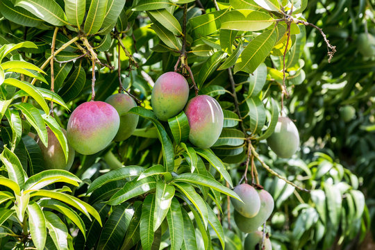

Where did Mangoes Come From?

Mangoes originated in South Asia and have been grown for thousands of years. They later spread to many tropical
and subtropical regions around the world.
Today, mangoes are grown in countries such as, India, Mexico, Thailand, the Phillipines, and many other warm regions.